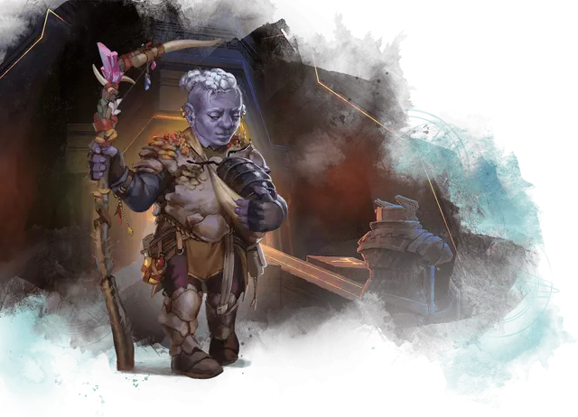

Дуэргар
Duergar

Дуэргары - это дварфы, чьи предки изменялись веками, проживая в самых глубоких местах Подземья. Это хтоническое царство насыщено странной магической энергией, и на протяжении поколений первые дуэргары впитывали её отголоски. Ещё сильнее они были изменены, когда пожиратели разума и другие Аберрации вторглись и начали проводить над ними ужасные эксперименты. Подпитываемые магией Подземья, эти эксперименты наделили первых дуэргаров псионическими способностями, которые были переданы их потомкам. Со временем они освободились от своих аберрантных тиранов и создали для себя новую жизнь в Подземье и за его пределами.
Особенности дуэргара
Вы обладаете следующими особенностями.
Увеличение характеристик. Либо значение одной характеристики по вашему выбору увеличивается на 2, а другой — на 1, либо значение трёх различных характеристик по вашему выбору увеличивается на 1.
Возраст. Как и у других дварфов, продолжительность жизни дуэргаров обычно составляет 350 лет.
Скорость. Ваша базовая скорость ходьбы — 30 футов.
Вид существа. Вы — Гуманоид. Вы также считаетесь дварфом для любого необходимого условия или эффекта, который требует, чтобы вы были дварфом.
Размер. Ваш размер — Средний.
Тёмное зрение. На расстоянии 120 футов вы при тусклом освещении можете видеть так, как будто это яркое освещение, и в темноте так, как будто это тусклое освещение. В темноте вы не можете различать цвета, только оттенки серого.
Дуэргарская магия. Начиная с 3-го уровня, вы можете накладывать на себя заклинание увеличение/уменьшение [enlarge/reduce] без использования материальных компонентов с помощью этой особенности. Начиная с 5-го уровня, вы можете накладывать на себя заклинание невидимость [invisibility] без использования материальных компонентов с помощью этой особенности. После накладывания одного из этих заклинаний с помощью особенности вы должны закончить продолжительный отдых, прежде чем сможете вновь наложить его таким образом. Вы также можете накладывать эти заклинания, используя ячейки заклинаний подходящего уровня.
Интеллект, Мудрость или Харизма является вашей базовой характеристикой для этих заклинаний (выберите одну из них при выборе этой расы).
Дуэргарская устойчивость. Вы с преимуществом совершаете спасброски для того чтобы избежать или окончить на себе состояние отравленный. Вы обладаете сопротивлением урону ядом.
Псионическая стойкость. Вы с преимуществом совершаете спасброски для того чтобы избежать или окончить на себе состояние очарованный и ошеломлённый.
Языки. Ваш персонаж может говорить, читать и писать на Общем и еще одном языке, который по вашему мнению подходит для персонажа.